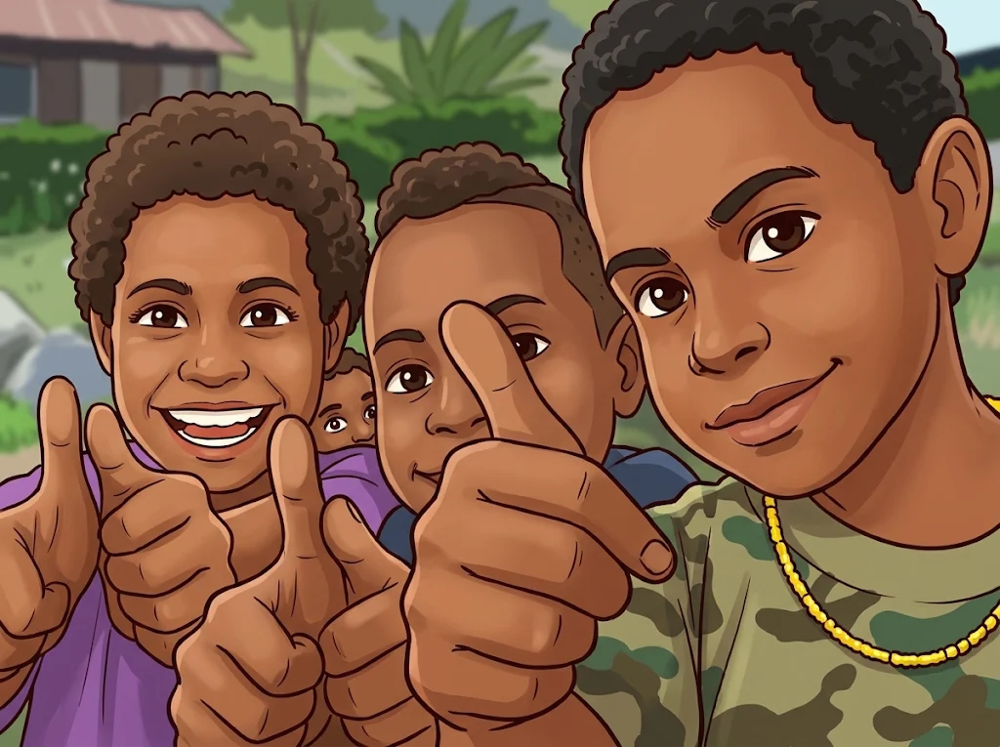

Dampak & Cerita
Dampak & Cerita
Bukti nyata bahwa aksara membuka pintu, untuk percaya diri, penghidupan, dan suara di tengah masyarakat.
Dampak & Cerita
Kisah Perubahan dari Kampung
Bukti nyata bahwa aksara membuka pintu—untuk percaya diri, penghidupan, dan suara di tengah masyarakat.
* Contoh testimoni — ganti dengan kisah peserta asli.
Momen Kegiatan